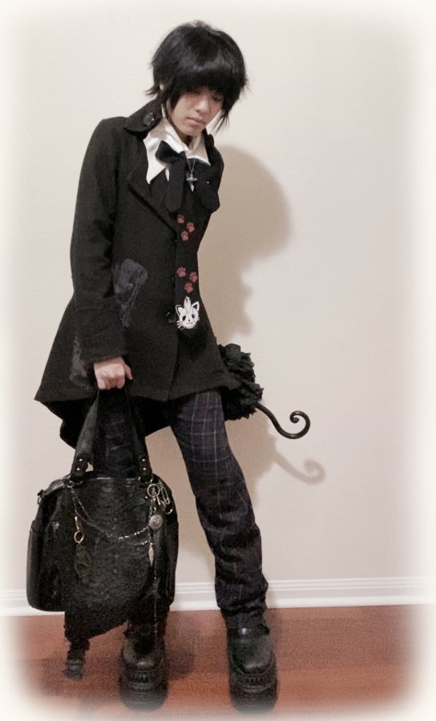

Back Butterfly Blouse
")
|
Brand:Alice And The Pirates Web Documentation: |
2025.11.30A slightly older and excellent piece. Minimalist enough to pair with different coats each wear, but can stand alone just fine with this unique branding on the back framed by light maroon butterflies |
